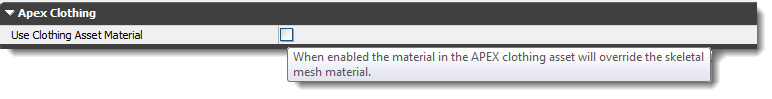
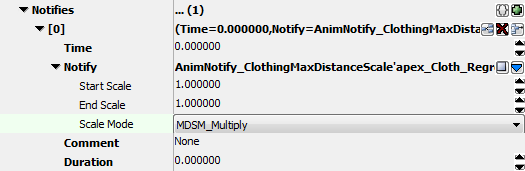

UDN
Search public documentation:
APEXClothingCH
English Translation
日本語訳
한국어
Interested in the Unreal Engine?
Visit the Unreal Technology site.
Looking for jobs and company info?
Check out the Epic games site.
Questions about support via UDN?
Contact the UDN Staff
日本語訳
한국어
Interested in the Unreal Engine?
Visit the Unreal Technology site.
Looking for jobs and company info?
Check out the Epic games site.
Questions about support via UDN?
Contact the UDN Staff
UE3中的APEX Clothing
概述
获得工具
指南
导入
- 为将要具有布料的资源导入骨架网格物体和动画文件(.psk and .psa)。
- 在材质编辑器 创建一个 Two Sided（双面）? 材质并设置 Used With APEXMeshes?(和APEXMeshes协同使用) 标志。

- 导入您使用 Max/Maya 布料插件创建的.apx文件。
- 注意
- 请确保您使用 "APEX Clothing"导出选项而不是"APEX ARM"进行导出。
- 打开动画集查看器并使得 Apex布料资源 和网格物体相联系。
- 默认情况下，只有1个布料插槽可用。在这里添加一个APEX Clothing节点将创建一个新的空插槽。将总有一个插槽为空的状态，以便可以添加多个布料资源。
- 在Skeletal Mesh(骨架网格物体)下面有一个新的Clothing LOD Map(布料LOD映射)部分。该部分用于将布料资源和图形材质结合起来，以管理LOD。
- 要想将APEX Clothing Asset(布料资源)和图新材质相关联，可以将相应布料资源的 Clothing Section Info(布料部分信息)设置为想使用的Material ID(材质ＩＤ)。这将使用APEX Clothing Asset(布料资源)替换网格物体部分的图形版本。

- Use Clothing Asset Material(使用布料资源材质) - 在动画集查看器中的骨架网格物体上，底部有一个新的 Apex Clothing部分。这个控制允许您使用APEX Clothing Asset中定义的替换图形材质覆盖带原图形材质。这支持基于每个布料资源的多个材质的情形。默认为未选中状态。这意味着APEX Clothing Asset将默认继承骨架网格物体的材质。选中该控制将会导致给定网格物体上的所有布料材质被他们各自相应的布料资源所覆盖。

.
- 如果启用了该覆盖功能，请在APEX Clothing Node中设置布料。( 参照以下Asset Settings(资源设置)中的图片)
- 您可以使用 PhysX Debug 菜单来查看APEX布料的各个方面的信息。

资源设置
- Continuous Rotation Threshold(连续旋转度阈值) – 如果您的角色在某些情况下旋转地太快，可能会导致和布料产生碰撞问题。也就是,角色在一帧中完成一个180度的完整旋转。通过设置这个阈值，您可以强制布料对齐到新的位置，使其不必进行强制的旋转模拟。
- Continuous Distance Threshold(连续距离阈值) - 当您的角色在一帧中移动超出正常距离时，可能会产生不真实的物理模拟，这将会导致布料发生不正常的拉伸。设置这个阈值将会电传布料到新的位置，从而避免给布料添加拉力。
- Reset After Teleport(电传后重置) - 这个标志告诉布料当电传发生后重置其本身。这将会将布料置回植皮姿势。这可以避免这种情形出现：当布料处于极端姿势，且您电传一个对象附近的玩家，而玩家的布料可能穿过该对象。

在动画(布料具有设计动作)过程中控制行为

ClothingMaxDistanceScale动画通知应该总是成对使用的，以便您可以平滑地混合到您需要的值，然后当退出动画时混合回原来的值。
图形LOD
- 如果您在DCC工具中设置使您的布料具有LOD，那么当您连接APEX布料资源到骨架网格物体(和上面提到的方法相同)时，无论APEX布料资源中有多少LOD，都将会填充和布料资源插槽相对应的布料LOD映射。在下面的示例中，有3个LOD。
- 设置每个级别的Clothing Section Info（布料部分信息）(正如上面所提到的)。
- 如果目的是想覆盖任何布料LOD的图形材质，那么请使用骨架网格物体的LOD信息部分中的覆盖材质。

风
- Wind Velocity Blend Time(风速混合时间) - 使用这些设置来设置布料顶点的目标风速。Wind Velocity Blend Time(风速混合时间)是布料达到该速度所需的时间。值为.01，将会立即获得反应。设置该值为0.0则会关闭风。
- Wind Velocity Vector(风速向量) - 风的方向及力度。

Clothing Lag Hints
- Preventing Lag with Attachments(阻止附加物滞后) - 当您在脚本中通过附加物附加布料时出现了延迟滞后，那么请尝试将那个SkeletalMeshComponent(骨架网格物体组件)的bForceUpdateAttachmentsInTick 项设置为true。这将会确保布料组件每帧更新两次 - 一次当Tick中更新，另一次当调用UpdateTransform时进行更新。这会导致一些性能消耗，但是当一个actor移动后，为了避免滞后，布料必须随之更新。
- Lag on Characters（角色滞后） - 确保带有布料的actors将他们的 TickGroup 设置为 TG_PreAsyncWork
- Tick Order - 一般在调试时，您可以输入日志，以确保下面的过程按正确的顺序发生。(使用GetPathName打印出名称，以确保您看到正确的actor。)
- Begin Frame(开始播放帧)
- Tick(更新)
- 更新变换 (设置了bFinalUpdate)
- 同步变换
示例
- Waving_Flag_Kinematic.max: APEX Clothing的旗帜示例的Max文件。